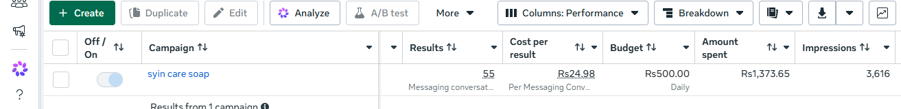
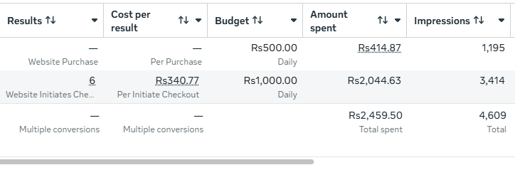
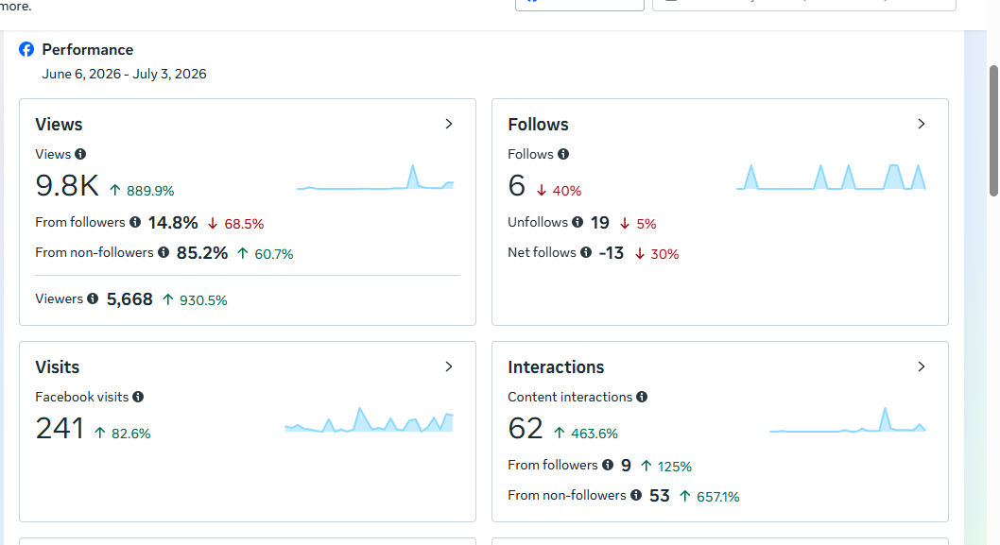
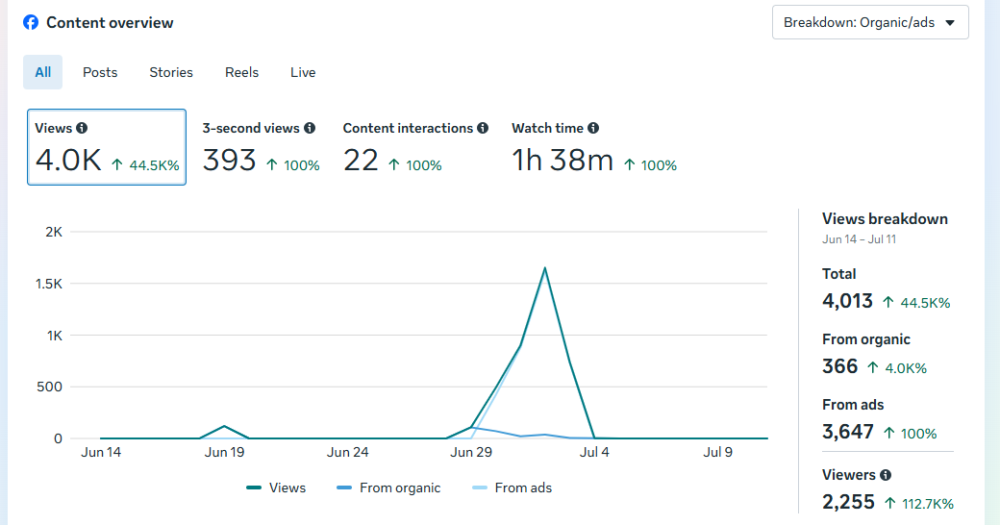
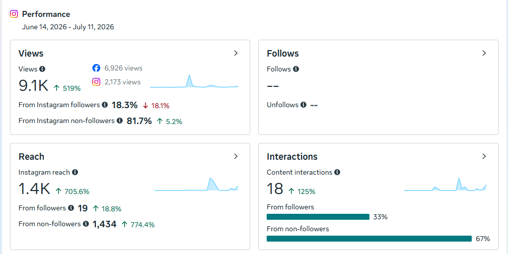
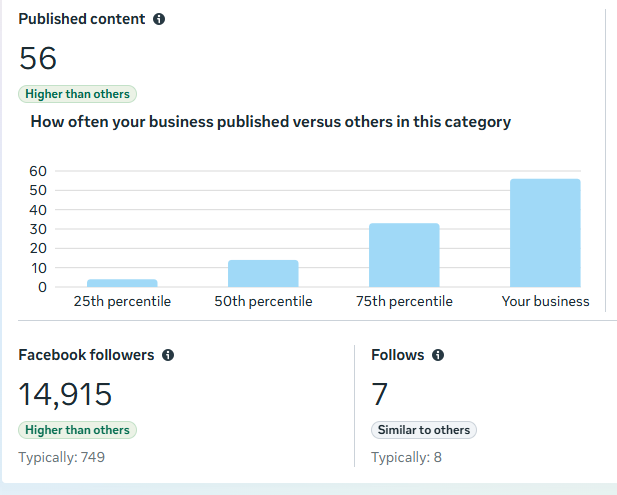

55 messaging conversations at Rs24.98 per result
From a Rs500 daily-budget campaign built for messaging conversations. The cost per conversation is named honestly — this is the result the campaign was optimizing for.

Live reporting from Meta Ads accounts and organic page insights — with the context explained honestly: what the campaign objective was, what the number measures, and what it does not claim.
Every figure below comes from a platform's own reporting screen. Nothing is retouched, nothing is inflated, and each number sits next to the claim it can honestly support.
From a Rs500 daily-budget campaign built for messaging conversations. The cost per conversation is named honestly — this is the result the campaign was optimizing for.

An e-commerce campaign summary in Meta Ads Manager. These are initiated checkouts — the first step of purchase, not completed sales — reported exactly as the platform reports them.

One month of a Facebook business page. Organic views grew 889.9% and content interactions 463.6% over the reported period.

A content report where total views include both organic play and ads. The split is stated separately so the number can't mislead you. Watch time also rose 100% over the reported period.

A four-week period, reported by Instagram's own analytics.

14,915 followers, far above the 749 typical for the category.

Screenshots are live platform reports. The honest reading is set out before the headline, so you don't have to guess what a number means.
Best next move: get a project plan. Say what marketing should improve — I'll come back with a scoped, fixed-quote plan, not an inflated promise.